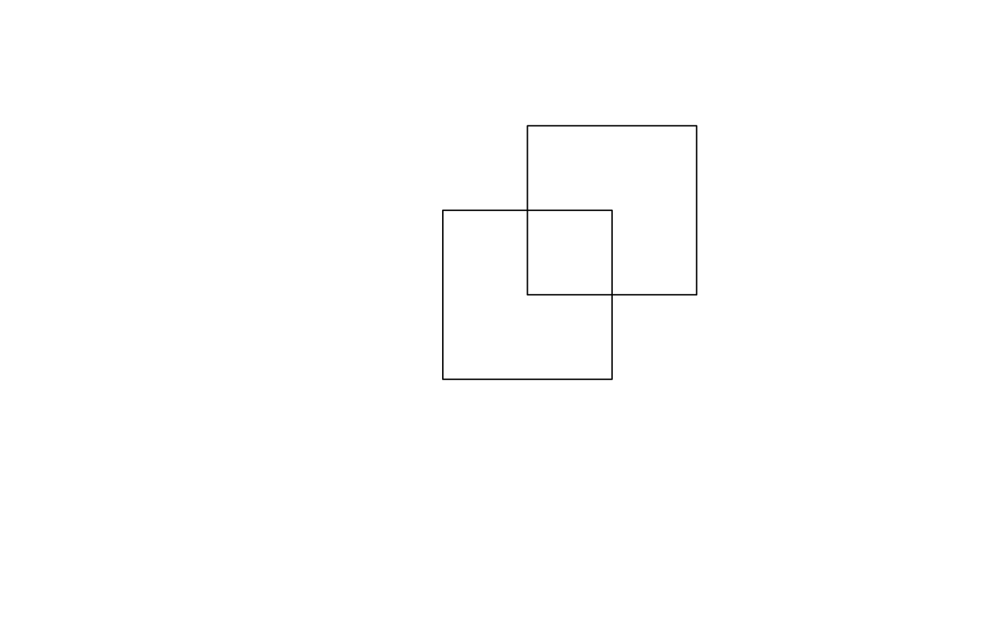

vignettes/solutions09.Rmd
solutions09.RmdThe solutions assume the following packages are attached (other packages will be attached when needed):
poly_1 and poly_2) with the help of the sf-package (see Chapter 2).
# create two polygons
coords_1 =
matrix(data = c(0, 0, 1, 0, 1, 1, 0, 1, 0, 0),
ncol = 2, byrow = TRUE)
coords_2 =
matrix(data = c(-0.5, -0.5, 0.5, -0.5, 0.5, 0.5,
-0.5, 0.5, -0.5, -0.5),
ncol = 2, byrow = TRUE)
# create the first polygon
poly_1 = st_polygon(list((coords_1)))
# convert it into a simple feature collection
poly_1 = st_sfc(poly_1)
poly_1 = st_sfc(poly_1, crs = 4326)
# finally, convert it into an sf-object
poly_1 = st_sf(geometry = poly_1, data = data.frame(id = 1))
# create a second polygon
poly_2 = st_polygon(list((coords_2))) %>%
st_sfc(crs = 4326) %>%
st_sf(geometry = ., data = data.frame(id = 1))
st_geometry(poly_2) = "geometry"
# visualize it
plot(st_geometry(poly_1), xlim = c(-1, 1), ylim = c(-1, 1))
plot(st_geometry(poly_2), add = TRUE)
Alternatively:
centr1 = st_point(c(0, 0))
centr2 = st_point(c(1, 1))
poly_1 = st_buffer(centr1, 1) %>%
st_sfc(., crs = 4326) %>%
st_sf(geometry = ., data = data.frame(id = 1))
poly_2 = st_buffer(centr2, 1) %>%
st_sfc(., crs = 4326) %>%
st_sf(geometry = ., data = data.frame(id = 1))
# visualize it
plot(st_geometry(poly_1), xlim = c(-1, 2), ylim = c(-1, 2))
plot(st_geometry(poly_2), add = TRUE)poly_1 and poly_2 using st_union() and qgis:union. What is the difference between the two union operations? How can we use the sf package to obtain the same result as QGIS?
library(spDataLarge)
set_env(dev = FALSE)
union_sf = st_union(poly_1, poly_2)
union_qgis = run_qgis("qgis:union", INPUT = poly_1, INPUT2 = poly_2,
OUTPUT = file.path(tempdir(), "union.shp"),
load_output = TRUE)
par(mfrow = c(1, 2))
plot(st_geometry(union_sf), main = "st_union")
plot(st_geometry(union_qgis), col = 1:3, main = "QGIS union")
# achieve the QGIS result using sf
int = st_intersection(poly_1, poly_2)
# difference_1
diff_1 = st_sym_difference(poly_1, poly_2) %>%
st_cast("POLYGON")
# the same as:
# diff_2 = st_difference(poly_1, poly_2)
# diff_3 = st_difference(poly_2, poly_1)
# rbind(diff_2, diff_3)
union_sf_2 = rbind(int, diff_1)
plot(st_geometry(union_sf_2), col = 1:3)poly_1 and poly_2 using:
library(sf)
library(spDataLarge)
# INTERSECTION USING RQGIS
#***************************
# first of all, we need to find out which function might do this for us
find_algorithms("intersec")
open_help("qgis:intersection")
get_usage("qgis:intersection")
# using R named arguments#
int_qgis = run_qgis("qgis:intersection", INPUT = poly_1, INPUT2 = poly_2,
OUTPUT = "int_qgis.shp", load_output = TRUE)
# visualize it
plot(st_geometry(poly_1), xlim = c(-1, 1), ylim = c(-1, 1))
plot(st_geometry(poly_2), add = TRUE)
plot(int_qgis, col = "lightblue", add = TRUE)
# INTERSECTION USING RSAGA
#***************************
# The RSAGA examples only work with SAGA < 2.3. We have informed the
# package maintainer to update SAGA
library(RSAGA)
library(link2GI)
linkSAGA()
rsaga.env()
# save shapefile layers
write_sf(poly_1, file.path(tempdir(), "poly_1.shp"))
write_sf(poly_2, file.path(tempdir(), "poly_2.shp"))
# find out how to union shapefiles with the help of SAGA
rsaga.get.modules(lib = "shapes_polygons")
rsaga.get.usage(lib = "shapes_polygons", module = "Intersect")
# create parameter-argument list for RSAGA
params = list(A = file.path(tempdir(), "poly_1.shp"),
B = file.path(tempdir(), "poly_2.shp"),
RESULT = file.path(tempdir(), "int_saga.shp"))
rsaga.geoprocessor(lib = "shapes_polygons", module = "Intersect",
param = params)
int_saga = st_read(file.path(tempdir(), "int_saga.shp"))
# visualize it
plot(st_geometry(poly_1), xlim = c(-1, 1), ylim = c(-1, 1))
plot(st_geometry(poly_2), add = TRUE)
plot(st_geometry(int_saga), col = "lightblue", add = TRUE)
# INTERSECTION USING rgrass7
#***************************
library(link2GI)
library(rgrass7)
link2GI::linkGRASS7(rbind(poly_1, poly_2), ver_select = TRUE)
# let's have a look at the help of v.overlay via rgrass7
execGRASS("g.manual", entry = "v.overlay")
# RQGIS::open_help("grass7:v.overlay")
use_sf()
writeVECT(poly_1, vname = "poly_1")
writeVECT(poly_2, vname = "poly_2")
execGRASS("v.overlay", ainput = "poly_1", binput = "poly_2",
output = "int_grass", operator = "and", flag = "overwrite")
out_grass = readVECT("int_grass")
plot(st_geometry(poly_1), xlim = c(-1, 1), ylim = c(-1, 1))
plot(st_geometry(poly_2), add = TRUE)
plot(out_grass, add = TRUE, col = "lightblue")
# INTERSECTION USING sf
#***************************
int_sf = st_intersection(poly_1, poly_2)
plot(st_geometry(poly_1), xlim = c(-1, 1), ylim = c(-1, 1))
plot(st_geometry(poly_2), add = TRUE)
plot(int_sf, add = TRUE, col = "lightblue")data(dem, package = "spDataLarge") and data(random_points, package = "spDataLarge"). Select randomly a point from random_points and find all dem pixels that can be seen from this point (hint: viewshed). Visualize your result. For example, plot a hillshade, and on top of it the digital elevation model, your viewshed output and the point. Additionally, give mapview a try.
library(spDataLarge)
library(raster)
data(dem, package = "spDataLarge")
data(random_points, package = "spDataLarge")
find_algorithms("viewshed")
alg = "grass7:r.viewshed"
get_usage(alg)
open_help(alg)
# let's find out about the default values
get_args_man(alg)
point = random_points[sample(1:nrow(random_points), 1), ]
coord = paste(sf::st_coordinates(point), collapse = ",")
out = run_qgis(alg, input = dem,
coordinates = coord,
output = file.path(tempdir(), "out.tif"),
load_output = TRUE)
# under Linux this was tested using QGIS 2.18.22 and GRASS GIS 7.4.1. In
# previous versions, however, "grass7:r.viewshed" might not work. In this case
# use rgrass7 directly:
library(rgrass7)
link2GI::linkGRASS7(dem, ver_select = TRUE)
# If both vector and raster are used, until stars raster support is in place,
# use_sp() will be needed. (https://github.com/rsbivand/rgrass7/issues/6)
use_sp()
writeRAST(as(dem, "SpatialGridDataFrame"), "dem")
writeVECT(as(random_points, "Spatial"), vname = "points")
execGRASS("r.viewshed", input = "dem", coordinates = sf::st_coordinates(point),
output = "view")
out = raster(readRAST("view"))
hs = hillShade(terrain(dem), terrain(dem, "aspect"), 40, 270)
plot(hs, col = gray(0:100 / 100), legend = FALSE)
plot(dem, add = TRUE, alpha = 0.5, legend = FALSE)
plot(point, add = TRUE, col = "red", pch = 16)
plot(out, add = TRUE, col = "lightgray", legend = FALSE)
plot(point, add = TRUE, col = "red", pch = 16)
# or using mapview
library(mapview)
mapview(out, col = "white", map.type = "Esri.WorldImagery") +
mapview(point)data("dem", package = "spDataLarge") using RSAGA.
library("RSAGA")
# check if rsaga.env can find the corresponding SAGA installation
rsaga.env()
rsaga.get.libraries()
rsaga.get.modules(libs = "ta_hydrology")
rsaga.get.usage(lib = "ta_hydrology", module = "SAGA Wetness Index")
# RSAGA only accepts files living on disk, so we have to save dem
raster::writeRaster(dem, filename = file.path(tempdir(), "dem.sdat"),
format = "SAGA")
# construct a parameter-argument list
params = list(DEM = file.path(tempdir(), "dem.sgrd"),
AREA = file.path(tempdir(), "carea.sdat"),
SLOPE = file.path(tempdir(), "cslope.sdata"),
AREA_TYPE = 0,
SLOPE_TYPE = 1)
rsaga.geoprocessor(lib = "ta_hydrology", module = "SAGA Wetness Index",
param = params)
# load the output back into R again
out = stack(file.path(tempdir(), "carea.sdat"),
file.path(tempdir(), "cslope.sdat"))
plot(out)gdalinfo via a system call for a raster file stored on disk of your choice.
link2GI::linkGDAL()
data("dem", package = "spDataLarge")
file = file.path(tempdir(), "dem.tif")
writeRaster(dem, filename = file, prj = TRUE, format = "GTiff")
cmd = paste("gdalinfo", file)
system(cmd)
library(RPostgreSQL)
library(sf)
conn = dbConnect(drv = PostgreSQL(), dbname = "rtafdf_zljbqm",
host = "db.qgiscloud.com",
port = "5432", user = "rtafdf_zljbqm",
password = "d3290ead")
query = paste(
"SELECT *",
"FROM highways",
"WHERE state = 'CA';")
ca_highways = st_read(conn, query = query, geom = "wkb_geometry")
plot(st_geometry(ca_highways))